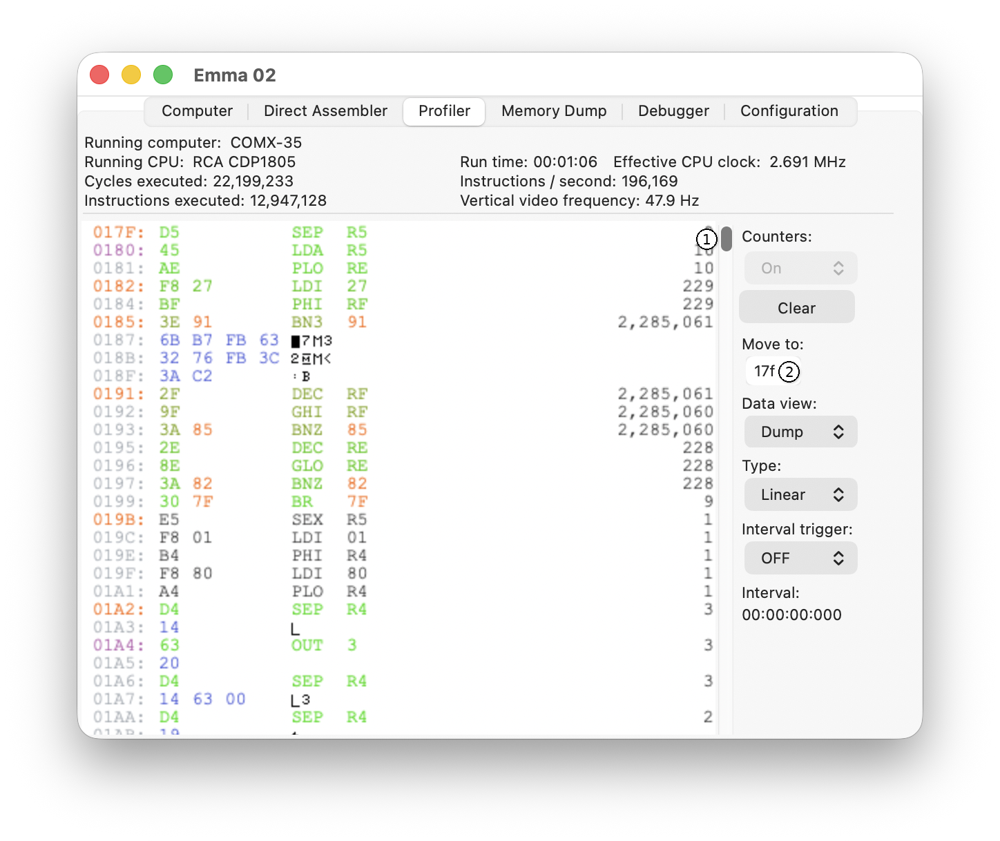

This section describes the different navigation options on the Profiler tab.
The Profiler navigation controls are shown below:

The Navigation scrollbar (1) moves through the code, with the top of the scrollbar at address 0 and the bottom at FFFF. UP/DOWN moves the code one line up or down, and SHIFT UP/SHIFT DOWN moves one page up or down. Alternatively, an address can be specified in the Move to: field (2), which moves the profiler directly to the specified address.